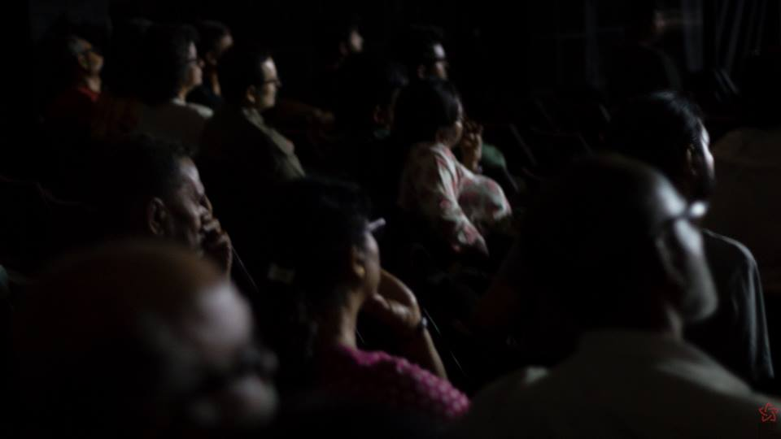

Wounds on Time
On the 13th of this cruelest April, we had gathered at the Jogesh Mime Academy auditorium, to watch two films, the heart-wrenching Lynch Nation directed by Shaheen Ahmed and Ashfaque EJ, and Turup by Ektara Collective. We had gathered also to listen to songs performed and presented by singer, songwriter and researcher, our beloved Moushumi Bhowmik. Or was it to converse in the language of songs and poems, when our conscience seemed to have become impenetrable by other forms of language? It was an uncanny coincidence, very telling of our wounded and bleeding times, that the day also marked the hundredth year of the Jalianwala Bagh Massacre. Where have we come, a hundred years since?
Lynch Nation brought out the voices of the kin of those from amongst us, who fell brutally to episodes of lynching by Fascist mobs let loose by the present regime. The film reminded us of what beasts we have become. The film also bore testimony to the incredible strength, humanity, dignity and will of people, witnesses to the most horrifying of crimes on their near and dear ones, yet showing us the way forward with their resolve to fight. Pehlu Khan's son, affirming the inevitable defeat of hatred, Junaid's brother working to fulfill his slain sibling's dream. Mothers, brothers, wives, friends...gathering together, coming together in grief and in resolve to defeat the fascists.
Sung evocatively by Ammar Rashid, the film ended with lines from Faiz's 'Intisaab', an ode to the inconsolable mothers who had lost their dear children to violence by fascist thugs:
"Un dukhi maaon ke naam/ Raat mein jinke bacche bilakhte hain aur Neend ki maar khaaye hue baazooaun se sambhalte nahin Dukh bataate nahin Minnaton zaariyon se behelte nahin" (In the name of those grieving mothers Whose children cry out in the night And would not be soothed by arms deprived of sleep Who would not express their sorrow Or be consoled by tears or entreaties)
Moushumi Bhowmik walked us further through our ravaged times with songs and words written and composed by herself, as also her contemporary and predecessor poets and musicians. The past blended with the present, as Maha Mirza's song (sung like a lullaby putting to sleep those that would never wake up again) bursting with names of men and women workers who perished like ants under the pressures of the global garment industry at Rana Plaza reminded us of Jalianwala Bagh and the ruthless colonial exploitation. How far have we come, indeed?
Birendra Chattopadhyay's poem 'Janmabhoomi Aj' from the 1970s had instructed us to look hard at the soil and our people, it had held out a promise of ushering in rains to soothe the burning motherland, but somewhere down the line, that certainty of unshakable faith in knowing the way now stands broken, as we grapple with redemption from our collective sins. Moushumi Bhowmick urged us to look hard not just at the outside but also at ourselves, at what we have become. She showed us a harsh mirror and at the same time healed bruised souls, speaking of the possibilities of healing that lie latent in the human soul. She sang and recited from works by Leonard Cohen, Farooq Wasif, Maya Angelou, Sahajiya, and her own body of songs. Sreemoyee Singh joined her on two of the songs, and also sang for us a Persian song composed by Mohammad Noori based on a Forough Farrokzad poem.
The evening ended with Ektara Collective's short fiction film, Turup, which has always been a favourite among our audiences, for its life-affirming story which brings back faith in the courage, resilience and strength of collective action and meaningful solidarities of the everyday.
As the city saw quite a few ugly and violent communal processions disguised as Ram Navami rallies, we tried to come together to make sense of our troubled times, to re-look at our histories, our peoples and our own selves.
Photograhy: Kunal Chakraborty, Sajid Jangi